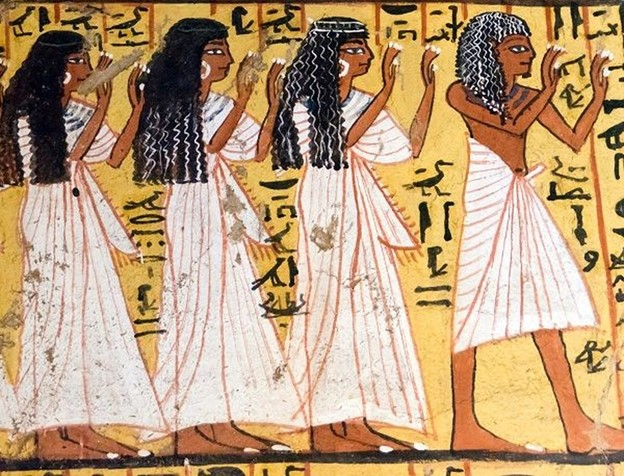

Nữ giới thuộc mọi tầng lớp đều mặc váy dài dài đến mắt cá chân làm bằng vải lanh được gọi là . Phụ nữ nông dân mặc váy vải lanh trơn và một số bức tượng cho thấy các cô hầu gái mặc váy làm bằng vải màu được may theo kiểu ca-rô. Phụ nữ thuộc tầng lớp thượng lưu mặc váy xếp ly có tua rua, đôi khi được phủ một lớp áo trong suốt. Phụ nữ thuộc tầng lớp thượng lưu cũng có loại váy làm từ các loại hạt. Nó thường kết thúc bằng cách kết tua rua, sẽ kêu lên khi họ di chuyển.
